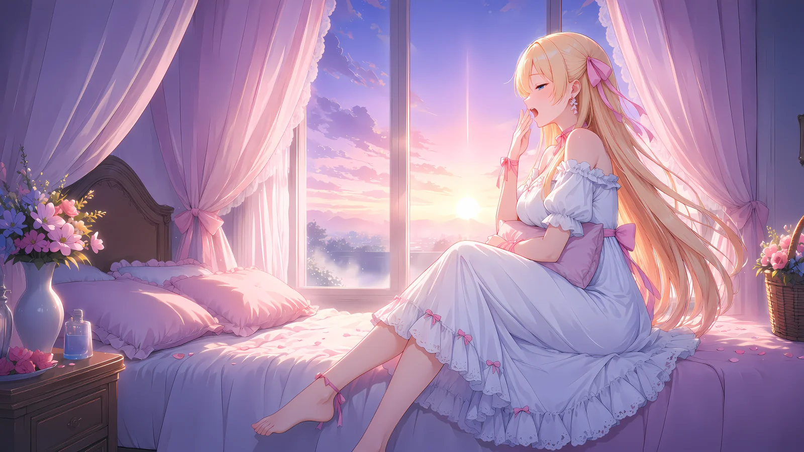
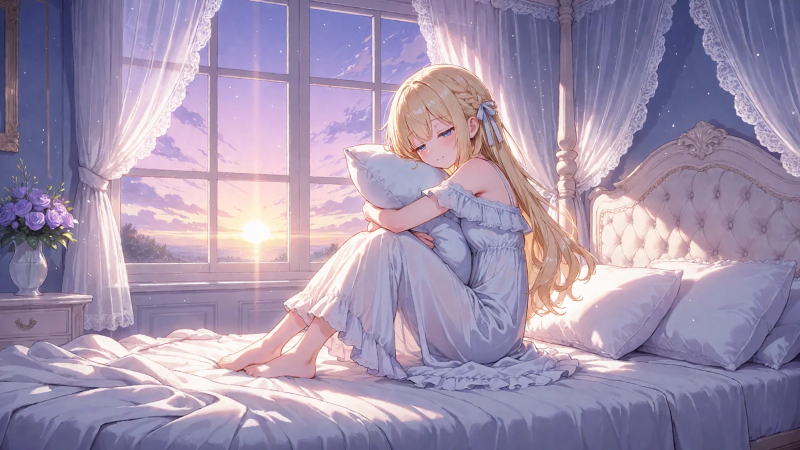
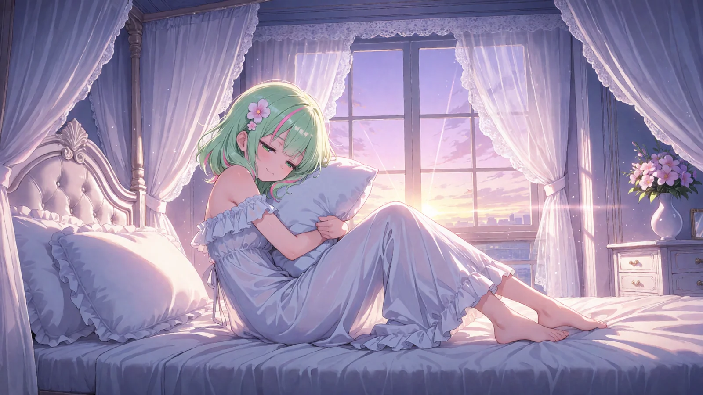
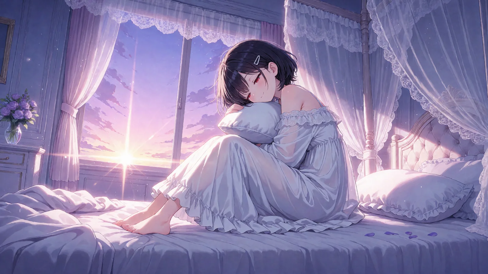
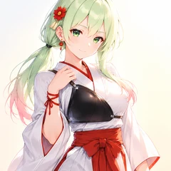

天蓋のベッドで夜明けを迎えるシーン（ComfyUI・Anima）
ひみつの眠り姫のプロンプト配布
ComfyUI 用2026-10-02
レースのカーテンが透ける天蓋のベッドに、紫色の夜明けの光。白いネグリジェで枕をぎゅっと抱えて、まだ眠たげに微笑むお姫さまのシーンのプロンプトです。オリキャラがいなくても、そのまま貼るだけで綺麗な女の子で出ます。自分のキャラにしたいときは、1行目の見た目だけ書き換えてください。
作例




※作例の画像の転載・保存しての再配布はご遠慮ください。
3人のおしゃべり（あと五分だけ）

ティルナ
見て見て！ 枕をぎゅーってして、まだ眠たそうに笑ってる〜！ あと五分だけ、ってお顔だよ！

セフィリア
まあ……天蓋のレースのカーテン越しに、紫色の夜明けの光。窓辺のお花まで、朝の色に染まっておりますね

リリア
1行目の髪の色を書き換えるだけで、金髪の三つ編みにも、黒髪のショートにもなりますの。オリキャラがいなくても、そのままで綺麗に出ますわ
ティルナ
白いネグリジェのフリル、ふわっふわ……わたしもこのベッドで二度寝したい〜！
セフィリア
ぱっちりお目覚めの顔にしたいときは、2行目の half-closed eyes を消せばよいそうでございます
リリア
でも眠たげなままのほうが、眠り姫らしくて可愛らしいですわね。おはようございます、ですわ
使い方（3ステップ）
- ComfyUI で Anima のモデルを読み、基本の画像生成（テキストから画像）の画面にする
- 下のポジティブとネガティブをワンタップでコピーして貼る（自分のキャラにするなら1行目だけ書き換える）
- 「推奨値」の大きさ・steps・CFG にして生成する（できれば 1.5 倍の hires fix も）
プロンプト
変えるのは1行目（色の付いた行）だけ
- 1行目＝キャラの見た目（髪の色・髪型・目の色など）。自分のキャラの特徴に書き換えてね
- オリキャラがいない人は、そのままコピーして使えばOK（作例の女の子で出ます）
- 自分のキャラの LoRA がある人は、1行目に LoRA のトリガー語を入れてね
- 2行目から下（シーン）と、ネガティブプロンプトは変えずにそのまま
- 🚫 版権キャラの名前・版権キャラの LoRA を入れて使うのは固く禁止です（下の「配布ルール」）
ポジティブプロンプト
1girl, solo, long hair, wavy hair, silver hair, purple eyes masterpiece, best quality, score_7, safe, sleepy smile, half-closed eyes, sitting on bed, hugging pillow, white nightgown, frilled dress, lace trim, off shoulder, bare shoulders, wide shot, from side, canopy bed, sheer curtains, lace curtains, white sheets, messy bed, bedroom, window, dawn, sunrise, morning light, purple sky, light rays, dust particles, flower vase, pastel colors, depth of field, detailed background, scenery, cinematic lighting, ethereal
ネガティブプロンプト
worst quality, low quality, lowres, bad anatomy, bad hands, extra fingers, missing fingers, fused fingers, blurry, jpeg artifacts, text, watermark, signature, logo, extra person, multiple girls, cropped, out of frame, japanese text, chinese text, korean text, kanji, hiragana, katakana, calligraphy
必要なもの（ComfyUI）
🧩 カスタムノードは使っていません。LoRA も要りません。ComfyUI の基本の画像生成（テキストから画像）に、ポジティブ・ネガティブを貼って、下の推奨値にするだけです。
| モデル | ファイル | 置き場 |
|---|---|---|
| Anima 系のモデル | PrismPalette_ANIMA_v1 など好きな Anima | models/diffusion_models |
| テキストエンコーダ（Anima 用） | qwen_3_06b_base.safetensors | models/text_encoders |
| VAE（Anima 用） | qwen_image_vae.safetensors | models/vae |
推奨値
| 大きさ | 1536×864（横長＝ベッドと窓の夜明けまで入る） | |
|---|---|---|
| steps | 30 | |
| CFG | 4.5 | |
| sampler | er_sde | |
| scheduler | beta | |
| hires fix（任意） | 1.5 倍に拡大して denoise 0.4・同じ steps と CFG（作例はこれ） | |
| LoRA | 要りません（自分のキャラの LoRA があれば使ってOK） | |
メモ
- 1行目には見た目だけを書いてください（髪の色・長さ・髪型・髪飾り・目の色など）。ネグリジェやお部屋は2行目からに入っているので、書かなくて大丈夫です。
- 目は半分とじた眠たげな顔になります。ぱっちり起こしたいときは、2行目の half-closed eyes を消してください。
- 手は枕を抱える形にしてあるので、くずれにくくなっています。くずれたら seed を変えて何枚か焼いてください。
- ほかのモデル（SDXL・Illustrious など）でも、2行目の先頭の masterpiece, best quality, score_7, safe をそのモデルの品質の語に替えれば使えます（作例は Anima です）。
配布ルール
- ⭕ プロンプトの改変は自由です。
- ⭕ 生成した画像は SNS に投稿して大丈夫です。
- ❌ プロンプト文そのものの転載・再配布・販売はしないでください。
- ❌ 自作のプロンプトだと名乗ることはやめてください。
- ❌ このページの作例画像の無断転載はしないでください。
- 🚫 アニメ・漫画・ゲームなどの版権キャラクター（著作権・商標のあるキャラ）、他の人のキャラクターやイラスト、実在の人物の写真を添付画像にして使うことは固く禁止します。版権キャラの名前や、版権キャラの LoRA を入れて使うことも禁止です。
- ✅ 添付してよいのは、自分で作ったキャラクター・自分が権利を持つ画像（または権利者から使ってよいと言われた画像）だけです。
- ⚠️ 生成した画像の使い方（投稿・公開など）は、使った人の責任でお願いします。権利の問題が起きても、配布者は責任を負えません。
- 💌 使ったら #眠り姫プロンプト を付けて見せてくれたら、とても嬉しいです（任意です）。
バックナンバー
📚 これまでの配布は バックナンバー にまとめてあります（作例の絵と内容が一覧で見られます）。お友だちに教えるときは、バックナンバーのページの URL を送ればOKです。